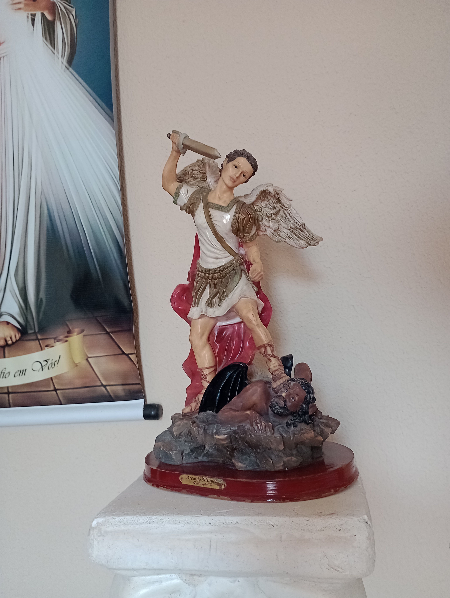

"Eu sou aquilo que Deus pensa de mim"
- Santa Teresinha do Menino Jesus
Vitória Beatriz Batista Brandão
Quem sou eu?
Brasileira, nasci e moro em Ceará-Mirim, cidade do estado do Rio Grande do Norte, localizada a 15km de distância da capital, Natal.
Gosto de ler, ver séries e de investigar o passado.
Apesar dos sonhos não terem limites, desejo o básico para uma vida digna e tranquila: passar na faculdade, trabalhar com o que desejo e viver bem com o que recebo, fazer memórias felizes com amigos e familiares e ter boas obras na vida do próximo.
Acredito que não é preciso muito para ser feliz. A felicidade está nos momentos mais triviais e comuns, como dizia Santa Teresinha do Menino Jesus: "Viver de amor é navegar sem cessar, semeando a paz, a alegria em todos os corações".
Curiosidades
Escrevi um livro chamado 'Histórias de uma garota', antologia com todas as minhas redações do 4º ano
